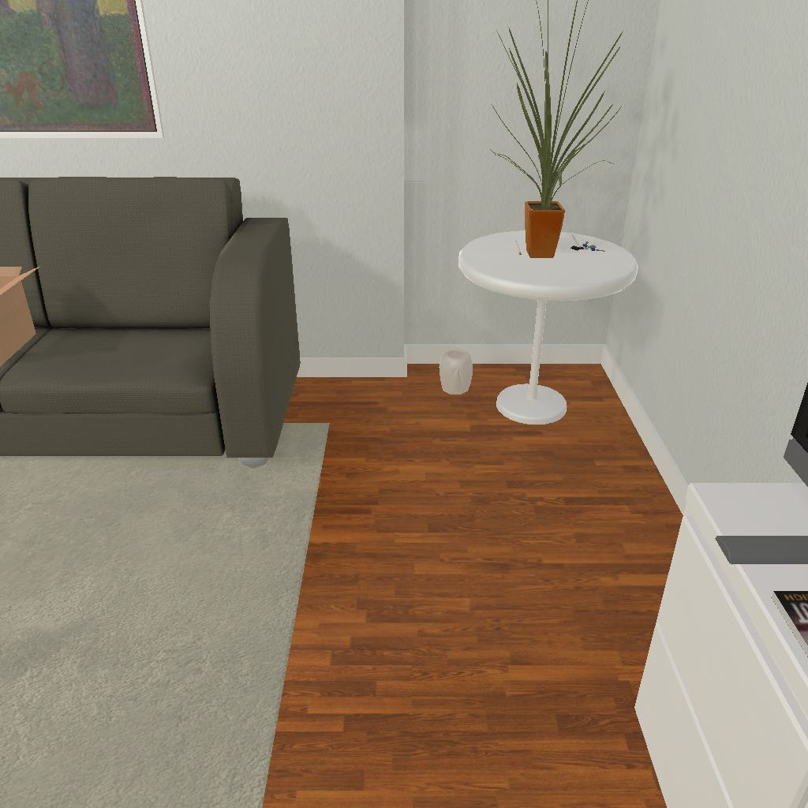

---------------------------------------------------------task: 5---------------------------------------------------------
--------------------------------------------------------------------------------------------------------------------------------------------------------------------
--------------------------------------------------------------------------------------------------------------------------------------------------------------------
Step:--------------------------------------------------------------------------2-------------------------------------------------------------------------------
----------------------------------------
VLM Prompt:
Image1:
Image2:
**Instruction**
1. Analyze the provided images to identify all visible household objects and compare the difference between images (e.h. whether the object is opened or not and taken on hand or not), focusing on those relevant to the task description "put a book in armchair."
2. Use the analysis of images and the task hint "The agent must find an object of the desired type, pick it up, find the correct location to place it, and put it down there." to answer the question: what is the most reasonable action in the choices for the task description "put a book in armchair"?
3. Decide and write the answer using the template: The answer is: (i): , where i is the real number. If there is no desired object in images, search every place based on **Initial Observation** to find the object. And if no one is exactly correct, choose a similar answer.
**Initial Observation**
You are in the middle of a room. Looking quickly around you, you can see armchair (1), sofa (1), coffeetable (1), drawer (1-4), sidetable (1-3), dresser (1)
**Answer Choices**
(1): go to armchair 1
(2): go to sofa 1
(3): go to coffeetable 1
(4): go to sidetable 1
(5): go to dresser 1
(6): go to drawer 2
(7): go to drawer 3
(8): go to drawer 4
(9): go to sidetable 2
(10): go to sidetable 3
(11): close drawer 1
(12): take houseplant 1 from drawer 1
(13): take television 1 from drawer 1
(14): take box 1 from drawer 1
(15): take book 1 from drawer 1
(16): take wateringcan 1 from drawer 1
(17): take keychain 1 from drawer 1
(18): take pencil 1 from drawer 1
(19): take pencil 2 from drawer 1
(20): examine drawer 1
**Answer**
Let's think step by step by following the instructions.
----------------------------------------
----------------------------------------
Original Response:
First, we analyze the images provided:
In Image 1, we can see an armchair, a white side table with a houseplant on it, and a part of a gray sofa. On the floor, there is a white object that might be a cup or vase. There's no book visible in the image.
In Image 2, the scene appears identical to Image 1. There are no changes in the position or state of any objects, and still, no book is visible.
Given the task description "put a book in armchair," we need to find a book. Since no book is visible in the images, we must search for one based on the initial observation, which mentions locations such as armchair, sofa, coffee table, side tables, dresser, and drawers.
The most reasonable action would be to search the locations where a book is more likely to be found. Typically, books are not placed in armchairs or sofas but can be found in or on drawers, side tables, or dressers.
Based on the initial observation, we have not checked the drawers yet, and drawer 1 is the only one mentioned in the answer choices. Therefore, examining drawer 1 seems to be the most logical next step to potentially find a book.
The answer is: (20): examine drawer 1.
----------------------------------------
----------------------------------------
>>> Refine Original VLM Response and Get Pure Action: examine drawer 1
----------------------------------------
-----------------------------------------------------------------
Running time: 38.347639322280884 seconds
Total Money: 1.6091800000000005
-----------------------------------------------------------------
-----------------------------------------------------------------
Text Observation:On the drawer 1, you see a houseplant 1, a television 1, a box 1, a book 1, a wateringcan 1, a keychain 1, a pencil 1, and a pencil 2.
-----------------------------------------------------------------
UNSUCCEED